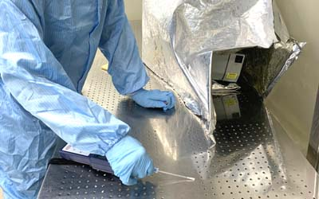

食物不潔細菌中毒
食品衛生其中最影響人的健康莫過於細菌，病從口入，是最快速方法之一，因此食物之衛生安全就顯得格外重要，一般常見之消化性疾病大多與食物有關，其中微生物之危害佔多數，微生物最喜在潮濕溫暖環境生長，除此外在處理食物，常因不潔之廚具用品，遭受到蟑螂老鼠這些最容易攜帶病源之介體汙染，造成危害，只要將污染源排除，就可防制絕大多數之危害，為其基本要件。

檢測方法
目前食品衛生最基本檢測為大腸桿菌檢測，大腸桿菌（Escherichia coli,E.coli）是人和動物腸道中最著名的一種細菌，主要寄生於大腸內，一般不致病，但食品廠出現大腸桿菌，即意味著食品直接或間接的被糞便污染，因此使用本法測試清潔度為最方便之方法之一。
另外也可在消毒後使用ATP生物螢光法來檢測表面菌量，便以參考消毒之可靠度。

中毒預防
防護措施：手是細菌最多，常洗手是防制污染最基本要件，在食品加工廠內人也是最大污染來源，口罩、頭套、腳套皆是最基本配備。
觀念建立：工廠環境每日維護，教育訓練之確實，及防呆機制等SOP須健全。
病媒蟲鼠：為傳染病之媒介，必須定期作蟲鼠害調查預防，或是定期消毒。
器具保養：包裝、運送等容器及環境處理工具、刀具砧板板，這部份也常被忽略的。